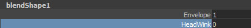
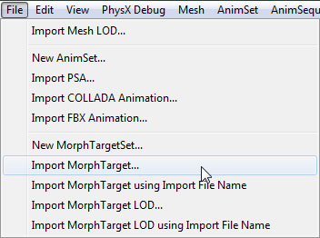

UDN
Search public documentation:
FBXMorphTargetPipeline
日本語訳
中国翻译
한국어
Interested in the Unreal Engine?
Visit the Unreal Technology site.
Looking for jobs and company info?
Check out the Epic games site.
Questions about support via UDN?
Contact the UDN Staff
中国翻译
한국어
Interested in the Unreal Engine?
Visit the Unreal Technology site.
Looking for jobs and company info?
Check out the Epic games site.
Questions about support via UDN?
Contact the UDN Staff
UE3 Home > FBX Content Pipeline > FBX Morph Target Pipeline
UE3 Home > Animation > FBX Morph Target Pipeline
UE3 Home > Character Artist > FBX Morph Target Pipeline
UE3 Home > Animator > FBX Morph Target Pipeline
UE3 Home > Animation > FBX Morph Target Pipeline
UE3 Home > Character Artist > FBX Morph Target Pipeline
UE3 Home > Animator > FBX Morph Target Pipeline
FBX Morph Target Pipeline
Overview
Naming
- 3dsMax: The name will be the name of the channel in the Morpher modifier.
- Maya: The name will be the name of the blendshape added to the name of the blendshape node, i.e. [BlendShapeNode]_[BlendShape]
Setting Up Morph Targets
- Start with the base mesh.
- Duplicate the mesh that will be modified to create the target pose. In this case, it is the head. Create the target pose. For this example, the target pose is the character winking.
- Add a Morpher modifier to the base mesh. It needs to be before the Skin modifier in the stack.
- With the morph channel you want to populate selected, press the in the Morpher modifier's properties rollout or right-click on the channel and choose Pick Object From Scene.
- In the viewport, click on the target mesh.
- The morph channel is now populated and displays the name of the target mesh. This is the name that will be given to the morph target in UnrealEd. You can change it in the Channel Parameters section of the Morpher modifier's rollout.
- Adjusting the channel's weight up to 100.0 causes the base mesh to interpolate toward the target pose.
- Start with the base mesh.
- Duplicate the mesh that will be modified to create the target pose. In this case, it is the head. Create the target pose. For this example, the target pose is the character winking.
- Select the target mesh and then the base mesh in that order.
- In the Create Deformers menu of the Animation menu set, select Blend Shape. The target mesh can be deleted after this step if desired.
- The blend shape node is now visible in the base mesh's properties. These are the names that will be used in UnrealEd. You can change the names of the blendshape node and the blendshape here.
 - Adjusting the blendshape's weight up to 1.0 causes the base mesh to interpolate toward the target pose.
Exporting Morph Targets
- Select the base mesh(es) and bones to be exported in the viewport.

- In the File menu choose Export Selected (or Export All if you want to export everything in the scene regardless of selection).
- Choose the location and name for the FBX file to export the morph target to and click the button.
- Set the appropriate options in the FBX Export dialog. For the purposes of exporting morph targets, you must enable the Animations checkbox and all of the Deformations options.
- Click the
 button to create the FBX file containing the morph target(s).
button to create the FBX file containing the morph target(s).
- Select the base mesh(es) and joints to be exported in the viewport.
- In the File menu choose Export Selection (or Export All if you want to export everything in the scene regardless of selection).

- Choose the location and name for the FBX file to export the morph target to and set the appropriate options in the FBX Export dialog. For the purposes of exporting morph targets, you must enable the Animations checkbox and all of the Deformed Models options.

- Click the
 button to create the FBX file containing the morph target(s).
button to create the FBX file containing the morph target(s).
Importing Morph Targets
- Click the
button in the Content Browser. Navigate to and select the FBX file you want to import in the file browser that opens. Note: you may want to select in the dropdown to filter out unwanted files.
- Choose the appropriate settings in the Import dialog. Make sure that Import Morph Targets is enabled. Note: The name of the imported mesh will follow the default Naming Rules. See the FBX Import Dialog section for complete details of all of the settings.
- Click the
button to import the mesh and LODs. The resulting mesh, morph target (MorphTargetSet), material(s), and texture(s) will be displayed in the Content Browser if the process was successful. You can see the MorphTargetSet that was created to hold the morph target was named after the root bone of the skeleton by default.
By viewing the imported mesh in the AnimSet Editor and selecting the newly created MorphTargetSet in the Morph tab, you can adjust the strength of the imported morph target and see that it is working as expected.
- Open the MorphTargetSet you wish to import the morph target into by double-clicking it in the Content Browser or by double-clicking the skeletal mesh the MorphTargetSet is associated with and then selecting the MorphTargetSet in the Morph tab of the AnimSet Editor.
- In the File menu of the AnimSet Editor, select Import MorphTarget (or one of the other morph targe import options).
 - Navigate to and select the FBX file containing the morph target in the file browser. Note: You may need to set the file format to to see your file.
- A progress dialog displays while the morph target is being imported. Once complete, the new morph target will be dislayed in the Morph Targets list of the Morph tab.
You can now adjust the strength of the imported morph target sequence and see that it is working as expected.